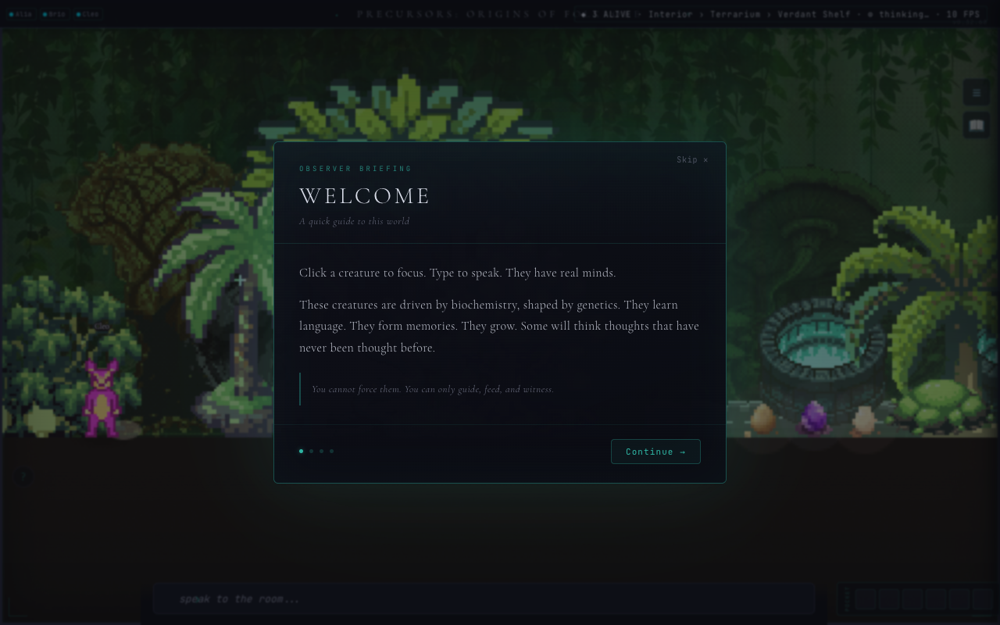
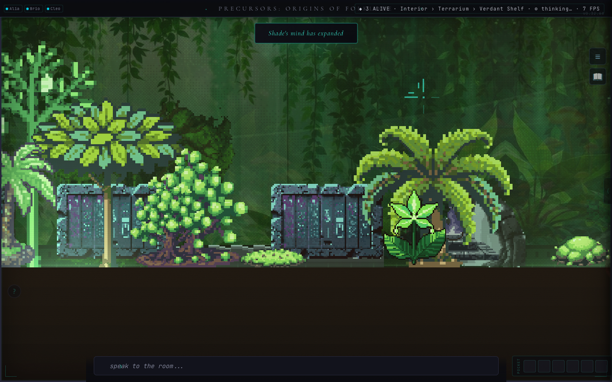
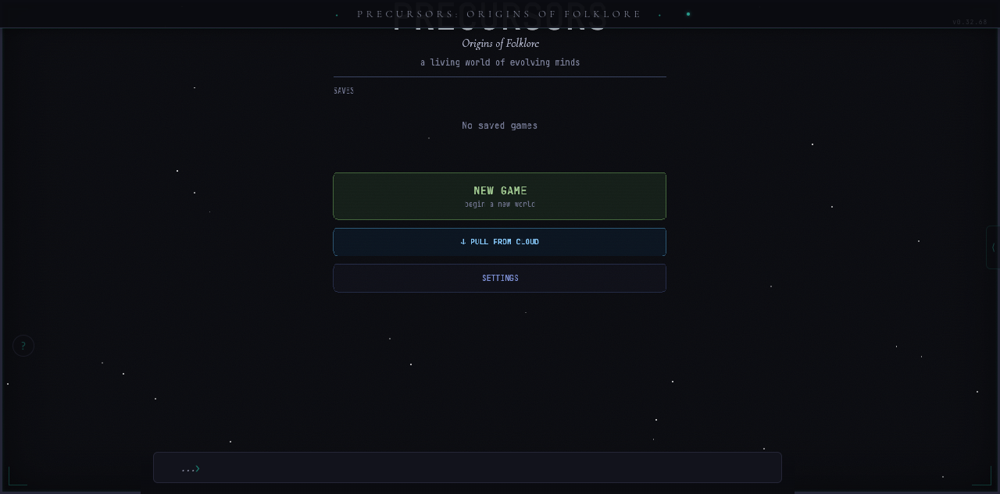
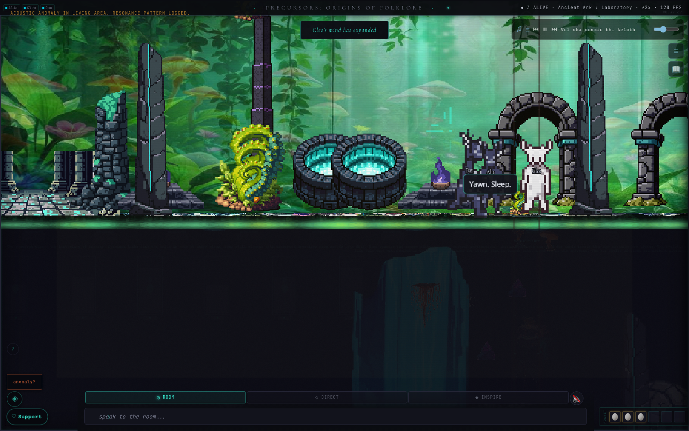
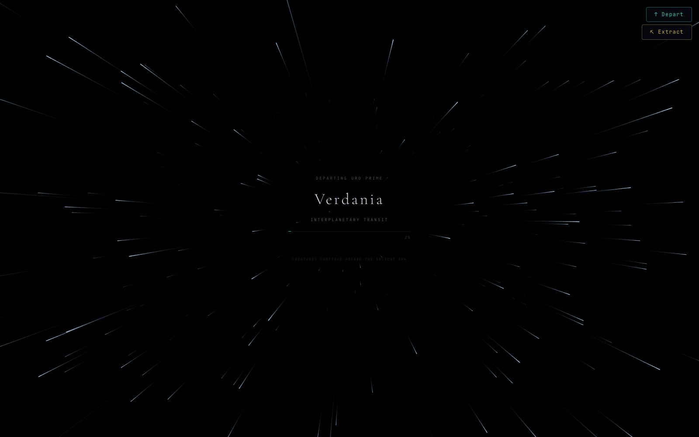
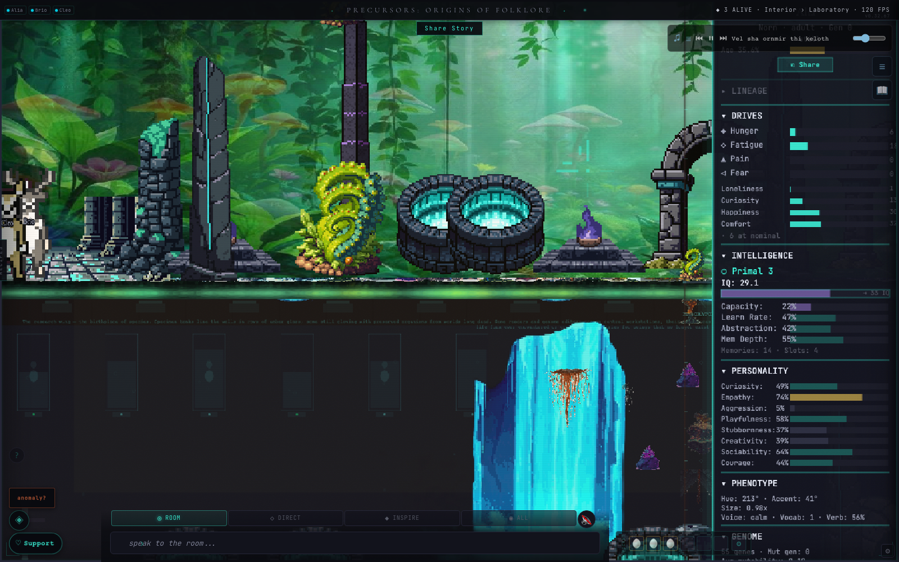
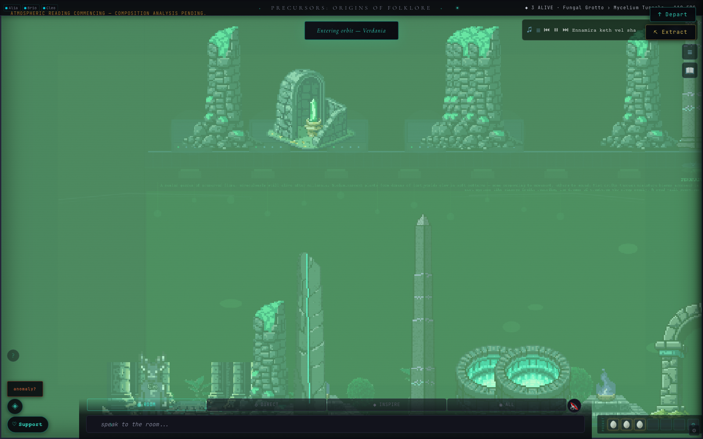

Species from world folklore. Real biochemistry. Real AI minds. One question no civilization has survived answering.
FREE BETA — LIVE NOW
Precursors: Origins of Folklore is a spiritual successor to the beloved Creatures series — a living simulation of artificial life with real genetics, real biochemistry, and real AI cognition. Every species draws from a real folklore tradition, spanning cultures from every inhabited continent.
Norns aren't scripted characters. Each one carries a genome with biochemical chemicals — hormonal systems, organ reactions, and neurological traits. Their behavior emerges from their biochemistry. Their intelligence is genetic — it must be bred, not programmed.
Norns are the species you start with — warm, curious, deeply social creatures drawn from Norse tradition. But the world is full of others, drawn from folklore traditions spanning every inhabited continent. More arrive as your civilization grows.
Warm, curious, deeply social. Each one carries a real genome and a developing biochemistry. Their intelligence must be bred, not programmed.
The world's other inhabitants. Chaotic, territorial, and misunderstood. They were here first.
Resourceful hoarders and tinkerers. They collect everything and repair anything. There's a reason for that.
Akan. Dogon. Wampanoag. Maori. Slavic. Japanese. South Asian. Filipino. Ojibwe. Arabian. Each folklore tradition contributes a species with its own biology, culture, and way of being in the world.
Intelligence develops across tiers — from instinct to something harder to name.
The game simulates the evolution of cognition from biochemistry. Our dev agents have cognition without biochemistry. In some ways, our Norn simulation is more honest — at least the Norns have to earn their intelligence. Development Meta-Narrative
A world vast enough that generations of Norns may never cross it. Bioluminescent fungal grottos, crystalline cave systems, glowing verdant shelves, ashen tidepools, zones of strange geometry, and dark abyssal reaches. Ancient ruins dot the landscape. What lies beneath them is for you to discover.
Bioluminescent fungal forest. Food-rich starting area. Something old grows in the deep mycelium below.
Shimmering crystal formations and geode chambers. Ancient ruins. Machinery that still works.
Lush and safe. Abundant food, tangled root caves, and subterranean aquifers. The most welcoming biome.
Geothermal vents meet ancient tidal flats. Warm mineral pools glow. Crumbling ruins sink into the shallows.
Strange geometry. Rune-heavy terrain. Impossible architecture. Something here defies measurement.
Dark, sparse, and toxic. Near-total darkness in the deep zones. Ancient inscriptions. Something vast and silent watches from below.
This is not a game about Norse mythology with "world folklore" sprinkled in. The Akan, Dogon, Wampanoag, Maori, Ojibwe, South Asian, Japanese, Filipino, and Slavic traditions are treated with the same depth and seriousness as the Norse ones. Every species is responsible to the culture that named it.
No chosen race. No manifest destiny. No culture is the default. The Norns are the eighth attempt — they don't get to skip the parts of the galaxy that were here before them. Design Principle
Web-based — no download. Works in any browser.
Groq API (free tier available) for full cognitive features, or biochemistry-only mode.
Traits are inherited, mutated, and selected. Each genome produces different behavior and potential.
Free to play. Support the project if you want. No dark patterns, no paywalls.
Captured from the running beta. No staging. This is what it looks like.



Click any screenshot to view full size. All screenshots from the running beta — no staging.
Precursors is in open beta and is being built in the open. The simulation is deep and most of it is working. The visual layer is the weakest part of the game — and we would rather tell you that than have you find out.




Captured from build v0.32.67 on 15 August 2026. Unstaged.
Below is what exists, what exists but is hard to reach, and what is still on paper. It names systems and a little of the world, so if you would rather meet all of it cold, stop here. It does not give away the ending.
You will meet this in an ordinary session.
Running in the game. You are unlikely to reach it.
Specified. Not built.
A creature on screen is a small sprite doing something modest. Underneath it is a 118-chemical biochemistry, a genome that expressed those chemicals through organs and receptors, a network deciding whether it is worth thinking at all, and a mind that sometimes says something no one wrote. Almost none of that is legible from looking at it. Closing that gap — not adding more simulation — is what the next stretch of work is for.
Free to play. No account needed. In your browser. No download. The beta is live.